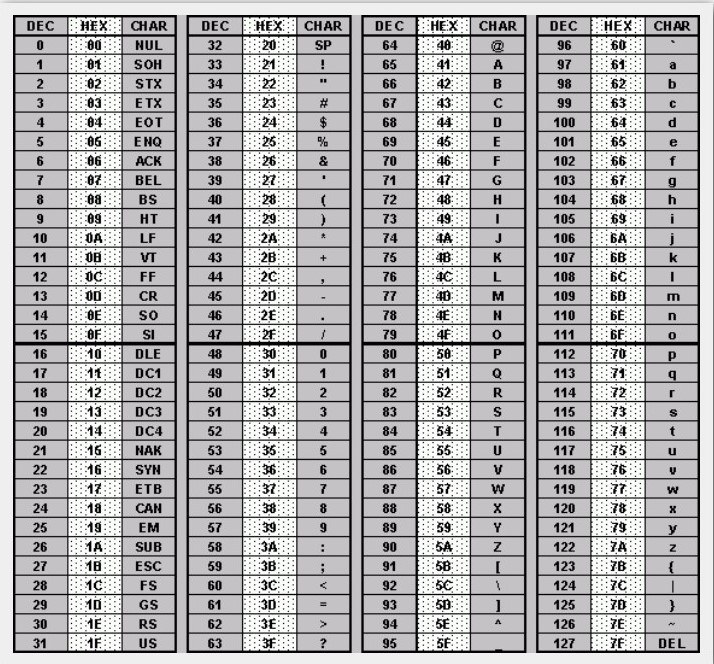

基礎資料型態型別
儲存資料
電腦是以二進位儲存資料，二進位是指數字是由 組成，相較於常見的十進位是由 組成，一個 或 稱為位元 (bit)，8 bits 稱為 byte（位元組），byte 是電腦基本儲存單位，下表為各種常見電腦儲存單位。
| 單位 | 備註 |
|---|---|
| 1B | 1 byte |
| 1KB | 1024 bytes |
| 1MB | 1024 KBs |
| 1GB | 1024 MBs |
在 C/C++ 裡，將所有的基礎資料型態分成四類說明，依序是整數、浮點數、字元、布林值。
整數
整數分成兩個部分，最左邊的位元表示正負號（ : 正， : 負），其餘表示數字。 通常會以 int 作為整數型態，int 兼顧範圍大小和記憶體大小。如果存的數字保證不會用到負數的話，可以在前面加上 unsigned，這樣最左邊的位元也會用來表示數字。
溢位
上表有給出每種型態的範圍。假設兩個相同型態加總後超過範圍，那麼最高位（最左邊）進位後會被捨去，造成結果和正確值不同，這個狀況稱之為溢位。
#include <cstdio>
int main() {
int a = 1000000000, b = 2000000000;
printf("%d\n", a + b);
}
-1294967296
| 名稱 | 別稱 | 位元組 | 範圍 |
|---|---|---|---|
| short | short int, signed short int | to | |
| unsigned short | unsigned short int | to | |
| int | signed, signed int | to | |
| unsigned int | unsigned | to | |
| long long | long long int, signed long long | to | |
| unsigned long long | unsigned long long int | to |
浮點數

浮點數分成 個部分，sign bit（符號）：用來表示正負號、exponent（指數）：用來表示次方數、mantissa（尾數）：用來表示精確度。
| 名稱 | 別稱 | 位元組 | 範圍 | 精度 |
|---|---|---|---|---|
| float | 無 | 4 | 3.4E +/- 38 | 7 digits |
| double | long double | 8 | 1.7E +/- 308 | 15 digits |
浮點數儲存也會有限制，如果小數點後個位數過多，會被捨去造成誤差，float 保證以 10 進位表示時，小數點後 7 位內會是正確，double 則是 15 位。
字元
C/C++ 採用 ASCII 字元集，一個數字對應一個字母，但這份字元集只有英文字母、數字、常見的符號，其他國家的文字則無。

| 名稱 | 別稱 | 位元組 | 範圍 |
|---|---|---|---|
| char | 無 | 1 | -128 to 127 |
| unsigned char | 無 | 1 | 0 to 255 |
| wchar | 無 | 2 | 0 to 65,535 |
布林值（C++)
布林值只有兩種植 Ture (1 或是說 非 0)、False (0)，當作邏輯變數，相較利用整數型態，有兩個有優勢，一個是節省記憶體，二是可以明確表示是用來記錄 True/False 狀態。
| 名稱 | 別稱 | 位元組 | 範圍 |
|---|---|---|---|
| bool | 無 | 1 | 0 to 1 |
後記
還有一個型態 enum，這裡先不提。
| 名稱 | 別稱 | 位元組 | 範圍 |
|---|---|---|---|
| enum | 無 | varies | TBA |